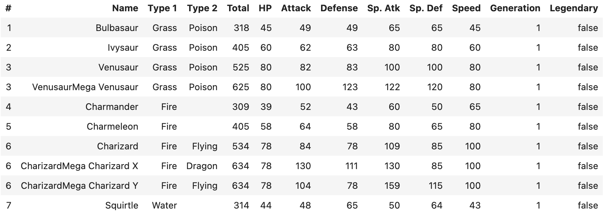

Introduction#
Welcome to the User Guide for the Python bindings of Arrow DataFusion. This guide aims to provide an introduction to DataFusion through various examples and highlight the most effective ways of using it.
Installation#
DataFusion is a Python library and, as such, can be installed via pip from PyPI.
pip install datafusion
You can verify the installation by running:
import datafusion
datafusion.__version__
'53.0.0'
In this documentation we will also show some examples for how DataFusion integrates with Jupyter notebooks. To install and start a Jupyter labs session use
pip install jupyterlab
jupyter lab
To demonstrate working with DataFusion, we need a data source. Later in the tutorial we will show options for data sources. For our first example, we demonstrate using a Pokemon dataset that you can download here.
With that file in place you can use the following python example to view the DataFrame in DataFusion.
from datafusion import SessionContext
ctx = SessionContext()
df = ctx.read_csv("pokemon.csv")
df.show()
DataFrame()
+----+---------------------------+--------+--------+-------+----+--------+---------+---------+---------+-------+------------+-----------+
| # | Name | Type 1 | Type 2 | Total | HP | Attack | Defense | Sp. Atk | Sp. Def | Speed | Generation | Legendary |
+----+---------------------------+--------+--------+-------+----+--------+---------+---------+---------+-------+------------+-----------+
| 1 | Bulbasaur | Grass | Poison | 318 | 45 | 49 | 49 | 65 | 65 | 45 | 1 | false |
| 2 | Ivysaur | Grass | Poison | 405 | 60 | 62 | 63 | 80 | 80 | 60 | 1 | false |
| 3 | Venusaur | Grass | Poison | 525 | 80 | 82 | 83 | 100 | 100 | 80 | 1 | false |
| 3 | VenusaurMega Venusaur | Grass | Poison | 625 | 80 | 100 | 123 | 122 | 120 | 80 | 1 | false |
| 4 | Charmander | Fire | | 309 | 39 | 52 | 43 | 60 | 50 | 65 | 1 | false |
| 5 | Charmeleon | Fire | | 405 | 58 | 64 | 58 | 80 | 65 | 80 | 1 | false |
| 6 | Charizard | Fire | Flying | 534 | 78 | 84 | 78 | 109 | 85 | 100 | 1 | false |
| 6 | CharizardMega Charizard X | Fire | Dragon | 634 | 78 | 130 | 111 | 130 | 85 | 100 | 1 | false |
| 6 | CharizardMega Charizard Y | Fire | Flying | 634 | 78 | 104 | 78 | 159 | 115 | 100 | 1 | false |
| 7 | Squirtle | Water | | 314 | 44 | 48 | 65 | 50 | 64 | 43 | 1 | false |
| 8 | Wartortle | Water | | 405 | 59 | 63 | 80 | 65 | 80 | 58 | 1 | false |
| 9 | Blastoise | Water | | 530 | 79 | 83 | 100 | 85 | 105 | 78 | 1 | false |
| 9 | BlastoiseMega Blastoise | Water | | 630 | 79 | 103 | 120 | 135 | 115 | 78 | 1 | false |
| 10 | Caterpie | Bug | | 195 | 45 | 30 | 35 | 20 | 20 | 45 | 1 | false |
| 11 | Metapod | Bug | | 205 | 50 | 20 | 55 | 25 | 25 | 30 | 1 | false |
| 12 | Butterfree | Bug | Flying | 395 | 60 | 45 | 50 | 90 | 80 | 70 | 1 | false |
| 13 | Weedle | Bug | Poison | 195 | 40 | 35 | 30 | 20 | 20 | 50 | 1 | false |
| 14 | Kakuna | Bug | Poison | 205 | 45 | 25 | 50 | 25 | 25 | 35 | 1 | false |
| 15 | Beedrill | Bug | Poison | 395 | 65 | 90 | 40 | 45 | 80 | 75 | 1 | false |
| 15 | BeedrillMega Beedrill | Bug | Poison | 495 | 65 | 150 | 40 | 15 | 80 | 145 | 1 | false |
+----+---------------------------+--------+--------+-------+----+--------+---------+---------+---------+-------+------------+-----------+
If you are working in a Jupyter notebook, you can also use the following to give you a table display that may be easier to read.
display(df)
{kind=link}
